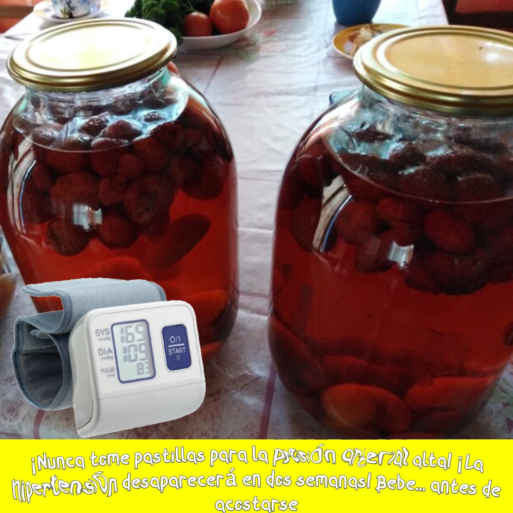

Artículo

Natto-extraño y saludable comida Japonesa
Natto-extraño y saludable comida Japonesa Natto es un especial de comida tradicional Japonesa, que es preparado a partir de la fermentación de la soja en un especial de la masa madre. Como la mayoría de los alimentos fermentados, natto tiene fuertes prebiótico propiedades y es muy saludable.A diferencia de la mayoría de los alimentos fermentados, el natto es libre de gluten y naturalmente alta en carbohidratos, por lo que es adecuado para las dietas de adelgazamiento. Este artículo es sólo para fines informativos. Por favor, consulte a su médico antes de utilizar esta información.Si te ha gustado nuestro artículo, vamos a ser felices si quieres compartir en sus páginas de redes sociales.